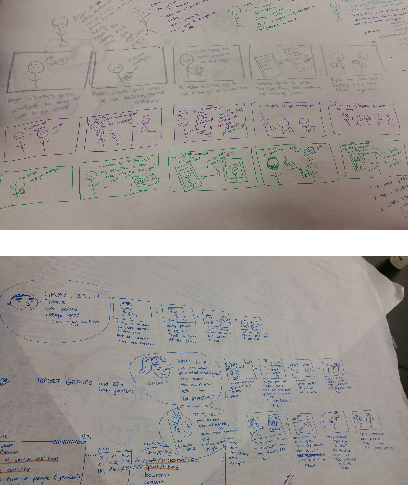
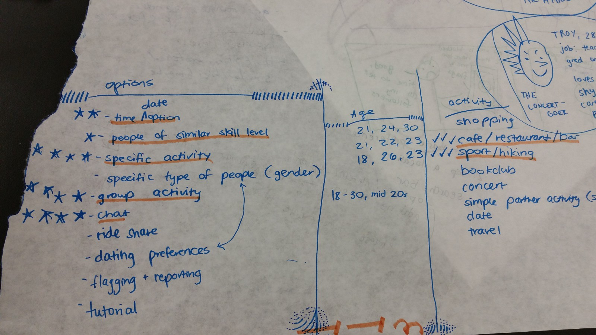
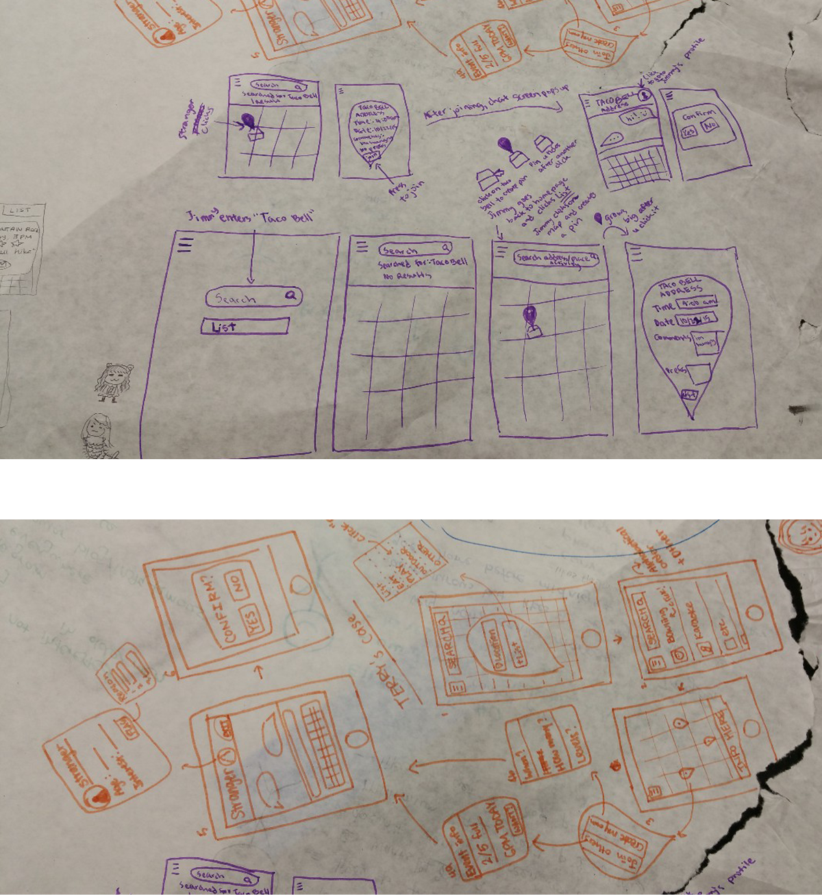
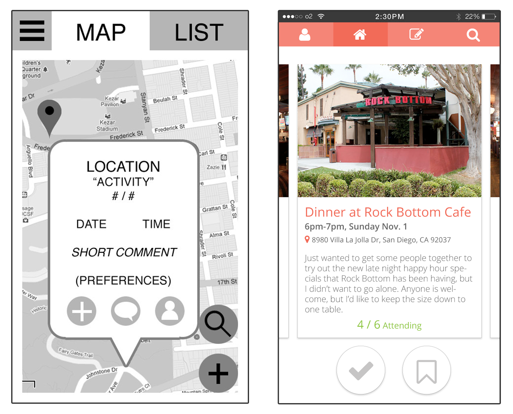

Introduction.
As a part of my course in "Usability and Information Architecture," my team designed an application that focused on creating a matchmaking experience that would be interest first, instead of person first. Instead of picking people, you can choose to like events, which will then bring you to discover new people through a common interest and an opportunity for a shared adventure.
Early Storyboarding.
With our group deciding early on that we wanted to tackle the problem of people meeting and getting to know new people with similar interests, we jumped right into developing user stories and storyboarding the experience.
Seeking to first attempt to help people of our age group, we began with creating user personas for individuals that represented different interest groups for college students around our age group. Especially in our day and age, many people meet through online medium, and more recently so, even apps like Tinder. However, these apps fail in actually shedding light on people's interest. Instead of helping you met people that you would like to spend time with and share interests, you meet people and then hope that they are compatible. By looking at the characteristics of our user personas, we sought to storyboard an experience that allowed for this type of event-first matching style.
User Research.
Very soon into the brainstorming and storyboarding, we realized there were a few gaps in our understanding of how people interacted with new people that deeply affected what was realisitic to assume possible in our desired user experience. In order to fill these gaps, we looked to our users for more information.
We talked to various potential users in the given age demographic about their outings with friends, about their dating life, and about how they met new people. A lot of people's concerns regarding these topics had issues we had not even considered. For example, some people had the top concern of safety when meeting new people. Others had no problem meeting others, but just needed to know what options were cost effective and available when planning outings with new people.
We took this opportunity to record our findings as features for our app and details to be appended to our existing user stories. If something came up from multiple of our interviews, we took extra note.
Prototyping.
It was soon time to bring together our ideas into a real prototype. We started on paper, working with very simple wireframes on testing basic heuristics by comparing each other's drafts. Soon ideas began converging, main concepts focused down, and we had a good idea of what we were going to try doing for our first prototype.
Iteration.
Our first demo-able app wasn't very pretty. It was a black and white collection of text, google images, and over-sized popups that we put together in a clickable walkthrough on Invision. It was incredibly low fidelity, but having something to test with users and get feedback was very important.
Our team had a certain amount of planned progress that we simply knew would take time. Making things visually pleasing, creating unique visual assets, and implementing all the menus and options would all just take time. However, since we were receiving feedback on older prototypes as we iterated, we were able to make bigger leaps with each phase, until we reached the final design seen in the right panel.
Pitching the App.
As a closing note for the class, we were required to pitch the app to a panel of judges as if we were requesting funding and explaining the future of the app. During the presentation, we also gave a demo of our MVP to the judges so they could better understand our app.
We focused our time on discussing:
- Why our app now?
- How do we compare to competition?
- Why did we make certain design choices?
- Why we are worth the investment?
Conclusion.
By the end of the class, we had a fairly solid prototype for our app, and a much more solid justification for why this app should exist.
For many of our team members, this was their first time dappling with mobile design, and many of them also didn't have a programming background, so progress wasn't as fast as I would have liked. By the end of the class, I had hoped for more progress (more similar to my HCI course with Scott Klemmer) and a live app, but nonetheless I learned a lot.
Overall, this was a good exercise in user research and quick prototyping, and we ended up with a solid product concept in a matter of weeks, which I am ultimately very proud of.